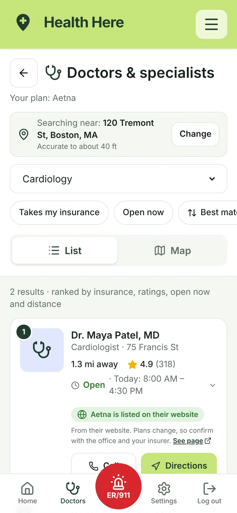

![User-flow diagram: opening the app leads to a guest path or a log in/sign up path; new accounts choose insurance, language and location, which save to the user profile. Everyone lands on the home screen, which leads to a search drop-down for the hospital/clinic tracker or the doctor/physician tracker and a results page, an ER button for the E.R. locator and calling 911, and a hamburger menu to the settings page with insurance, language and accessibility options. A Home button returns to the home screen from every page.](img/user-flow.webp)
Search for what you actually need
Pick hospitals and clinics, or a doctor by specialty, from cardiology to pediatrics. Results appear as a list and on a map, with today's hours, ratings, and one tap to call or get directions.
- "Best match" puts the most useful places first: ones that take your plan, with trusted ratings, open now, not too far.
- A perfect 5.0 from two reviews doesn't outrank a 4.6 from nine hundred.
